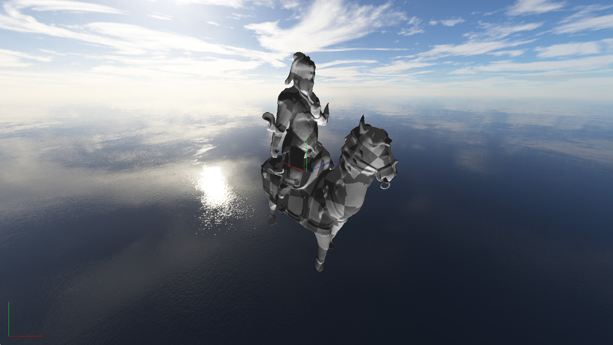
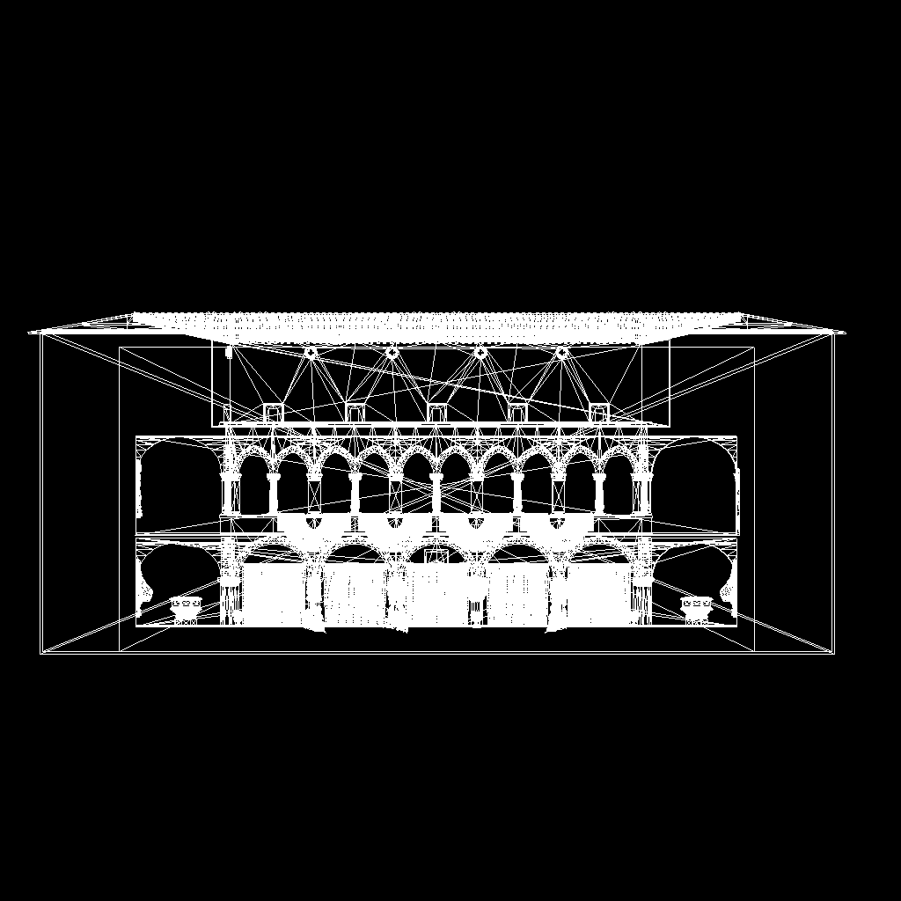
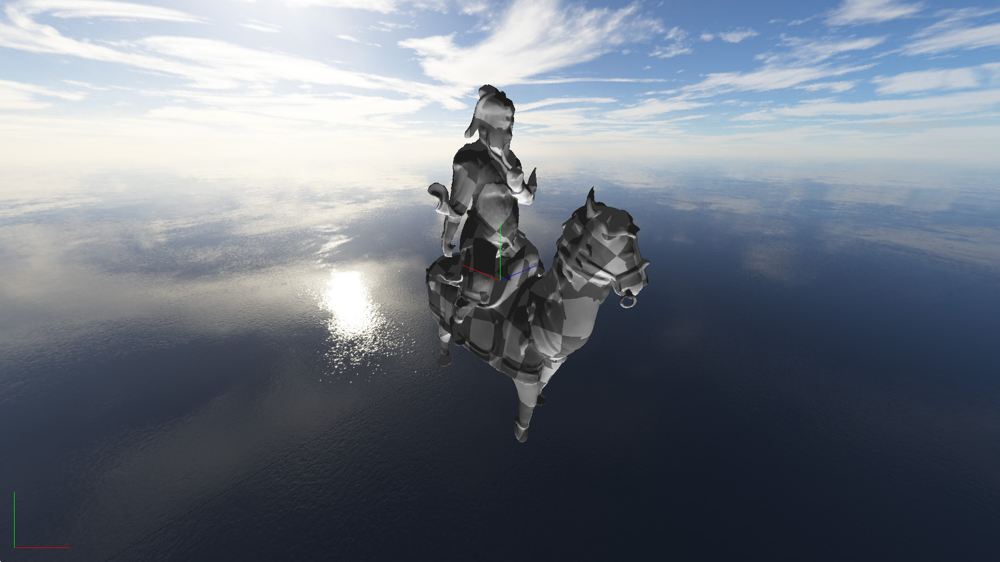
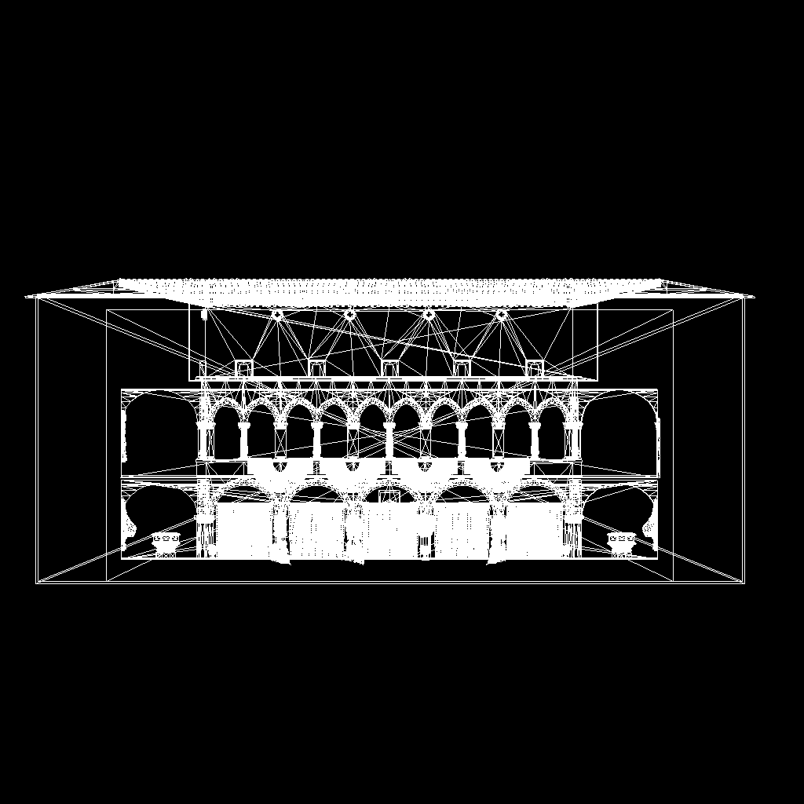
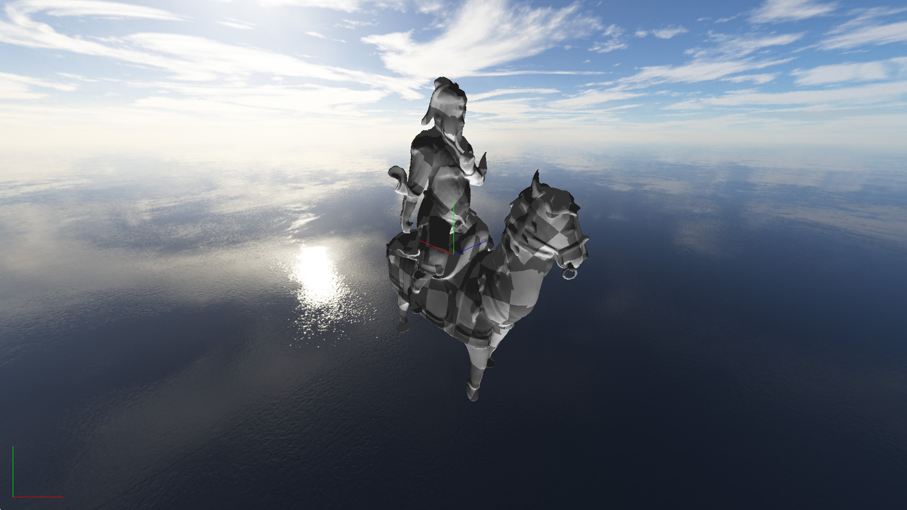
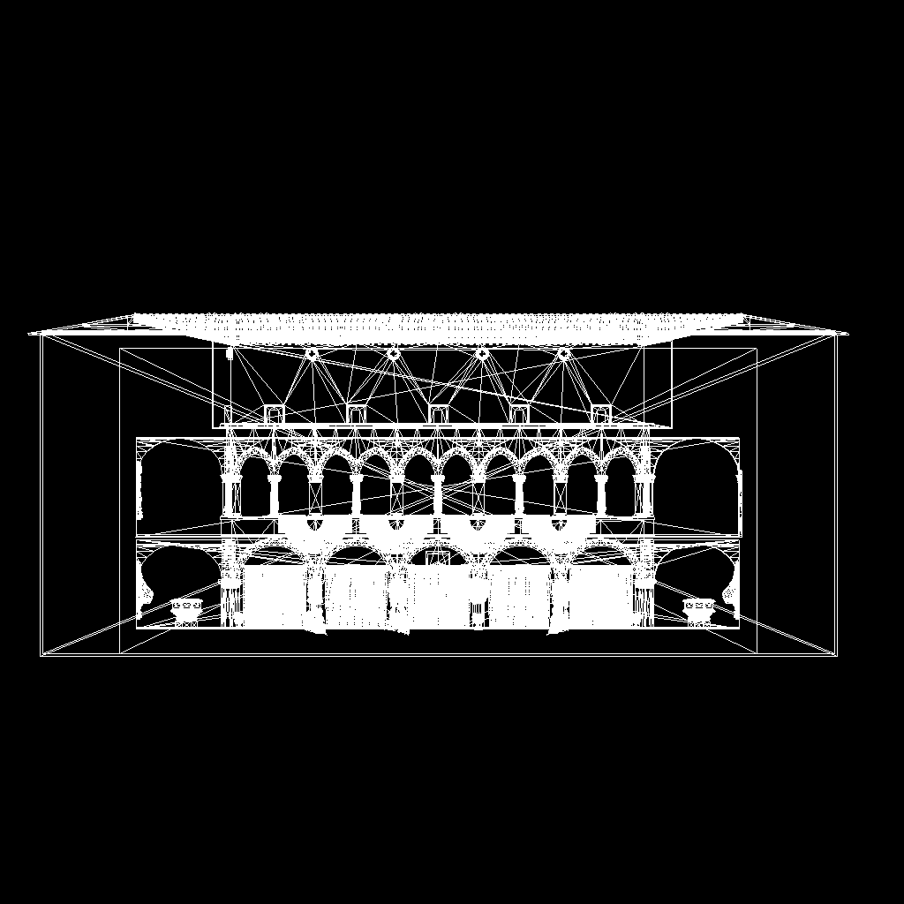

I believe that mastery of a skill requires thorough understanding of its foundations. To this end, and also because it is fun, I write software renderers "from-scratch" in C and a bit of C++. My first decent renderer, a polygon rasterizer, started as one of many tests of my a BMP image library I had written. The rasterizer implements features such as cubemap environments, perspective correct vertex attribute interpolation, Blinn-Phong lighting, etc. My second was a ray tracer that I wrote for a class. It can render polygon meshes as well as implicit spheres. The ray tracer implements features such as bounce lighting, reflection, refraction, soft shadowing, etc. Both renderers naturally have some manner of asset importing tools. The rasterizer works with OBJ meshes and BMP textures, while the ray tracer works with primitives defined in a custom scene specification of my professor's design and PPM textures. Both renderers also involve quite a bit of linear algebra, and all of that linear algebra is computed by way of my personal linear algebra libraries that I have written expressly for these projects.

